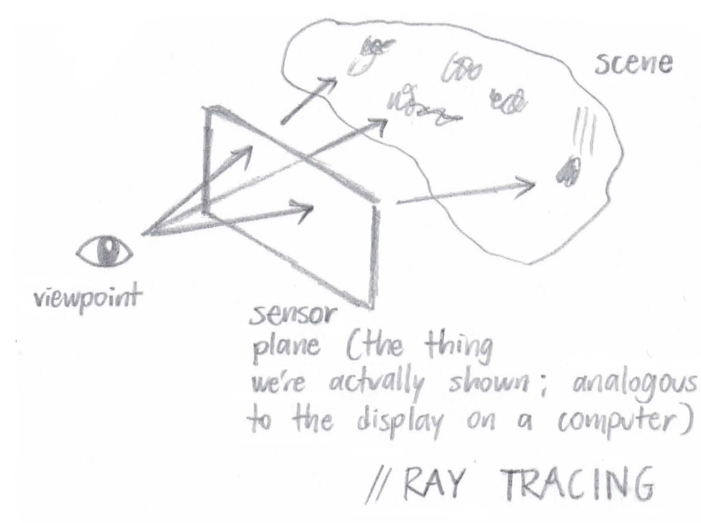
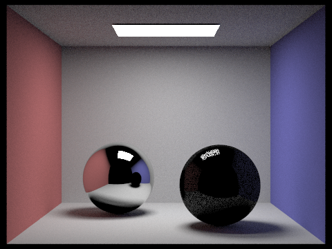

Assignment 3: PathTracer
Owen Jow
Navigation: 1 | 2 | 3 | 4 | 5
Part 1: Ray Generation and Intersection
At a high level, "ray generation and intersection" suggests that we'll be generating camera rays (rays originating at the position of the camera, aka the "viewpoint" in the below figure) and tracing these rays through the scene. By this, I mean that we'll cast a number of rays through every pixel on the image plane and see what they hit on the other side. The colors we display on the screen (we can think of the screen as the image plane itself) are actually going to be the colors associated with each of those intersected objects! Since those colors can fluctuate based on the scene lighting, we'll also have to bounce the rays off of the objects and see what kind of lighting we've got. However, that's a task for later parts. For now, all we're doing is creating these rays and sending them through the scene, checking for object intersections.
|

Figure 1: A visual depiction of ray tracing. Rays start at an eye or a camera, travel through every pixel in the image plane, and collide with objects in the scene
|
For this assignment, we take
ns_aa samples at every pixel, which is to say we pass
ns_aa rays through slightly different positions within each pixel. The rays are actually created in
Camera::generate_ray(), where, given a point on the sensor plane, we construct a ray with its origin at the camera's position and its direction oriented toward the passed-in point.
After we've created our ray, we have to implement intersection methods (otherwise we'd never know what the ray hit on the other side of the sensor plane). In other words, we have to look at every primitive in the scene and see which one (if any) the ray intersects first. Note that our primitive types include triangles and spheres.
Where triangles are concerned, my program uses the
Möller-Trumbore algorithm to test for intersections. What the heck is that, you may ask? Well, it really boils down to a bit of algebra and geometry:
Using barycentric coordinates, we know that any point (inside or out of a triangle) can be expressed as follows:
P = αA + βB + γC, where α = 1 - β - γ
This is equivalent to saying
P = (1 - β - γ) * A + β * B + γ * C
P = A + (B - A) * β + (C - A) * γ
|
Figure 2: (B - A) and (C - A) are actually triangle edges
|
Meanwhile, we have another way of denoting any point along a ray:
P = O + tD
In the above equation,
O is the origin,
D is the direction, and
t is a parameter representing the distance from the ray's origin to point
P (or, alternatively, the time to reach point
P).
Substituting one equation into the other, we have
O + tD = A + (B - A) * β + (C - A) * γ
O - A = -tD + (B - A) * β + (C - A) * γ
Note that the triangle vertices (
A,
B,
C),
O, and
D are known quantities. The only things we're solving for are
t, β, and γ. So we have three unknowns. And since our vectors are in three dimensions, we actually have three equations! (It blew my mind when I first realized this.)
Using
.x,
.y, and
.z as the
x-,
y-, and
z- coordinates respectively, we can rewrite our equation as
[(-D).x] * t + [(B - A).x] * β + [(C - A).x] * γ = (O - A).x
[(-D).y] * t + [(B - A).y] * β + [(C - A).y] * γ = (O - A).y
[(-D).z] * t + [(B - A).z] * β + [(C - A).z] * γ = (O - A).z
Again, we're solving for
t, β, and γ. We can write the above equations in matrix form and use Cramer's Rule in order to derive the actual values for our three scalar quantities. Through this, we arrive at
|
Figure 3: Using Cramer's Rule to derive the actual values
|
Because of the way barycentric coordinates work, we know that the ray intersects triangle ABC (that is, point
O +
tD is inside the triangle) if and only if the following conditions hold:
0 <= β <= 1
0 <= γ <= 1
β + γ <= 1
If we find an intersection, we just have to make sure it's the
closest intersection (by checking that the intersection's
t is between the ray's
min_t and
max_t values). If it is, that's it! If it isn't, that's also it.
Part 1 Images
|
Figure 4: dae/sky/CBspheres_lambertian.dae with normal shading
|
|
Figure 5: dae/sky/bench.dae with normal shading
|
|
Figure 6: dae/sky/CBgems.dae with normal shading
|
Part 1 Setbacks
| #1 |
I thought that if the determinant was negative, we would automatically return false. Apparently, this is not the case. |
| #2 |
My r.d was always (0, 0, 0) and I wasn't sure why. After an embarrassingly long amount of time, I realized it was because I'd been editing the camera.cpp file in my Assignment 2 folder. |
Part 2: Bounding Volume Hierarchy
All right. As of Part 1, we've got our intersection code set up. However, also as of Part 1 we're collision-testing EVERY ray against EVERY primitive. That seems a little inefficient, doesn't it? It turns out we can do better, using an acceleration structure called a bounding volume hierarchy. By spatially partitioning our primitives into different portions of the scene (we'll call these "portions" BVHNodes), we can compare each ray against a single BVHNode at a time... meaning that we can quickly test our rays for intersection against groups of primitives, instead of having to go through each primitive individually.
|
Figure 7: The BVH for dae/meshedit/maxplanck.dae
|
Our
BVHNodes are made up of smaller
BVHNodes that occupy space within the first
BVHNode. This relationship forms a kind of tree (a bounding volume
hierarchy). Indeed, every node that isn't a leaf has a left child and a right child. Primitives are split between the two based on where they are in the scene.
If our ray hits a
BVHNode's left or right child, we'll look inside of that child (possibly both, if the ray hits both) and recurse, checking for intersections with that child's children. When we get to a leaf node, we'll see whether the ray intersects any of the primitives contained within that leaf node's space (technically its
bounding box). In this way, we avoid running intersection tests against a lot of primitives that aren't anywhere near the ray.
BVH construction
To construct the BVH, we'll use the recursive algorithm outlined in the spec. The construction function takes in a vector of primitives (
prims) and a
max_leaf_size. No matter what, we start off by making a
BVHNode whose bounding box contains all of the given primitives.
Our base case is when there are
max_leaf_size primitives (or less) in the
prims vector. When this happens, the newly constructed node is a leaf node – accordingly, we add all of the primitives to the node's primitive list and return that node.
If there are more than
max_leaf_size primitives in the passed-in list, we'll have to recurse... which means we'll need to choose a splitting point. In my algorithm, the split axis is always the extent's largest dimension, which I find by taking the maximum of
bbox.extent.x, bbox.extent.y, and bbox.extent.z. The split
point is the center of the bounding box (
(bbox.min + bbox.max) / 2).
Finally, we'll actually do the splitting. This means that we'll break
prims up into left and right vectors, based on which side of the split axis their bounding box's centroid lies on. When we have our left and right child vectors, we make our
construct_bvh() recursive calls on each of them (setting the left and right children of our node to be the result of these calls). Once's that's done, we can return our node. The node from the original call will be the
BVHNode root – the node at the top of the hierarchy, which contains all other nodes.
The BVH intersection algorithm
So we have our BVH (and, offscreen, our code to test whether a ray intersects a bounding box). At this point, we can speed up our program by implementing
BVHAccel's intersection method. Like construction, this involves a recursive traversal. We have two base cases. If the ray misses the
BVHNode's bounding box entirely, we can return safely (because if a ray misses the bounding box, it definitely misses all of the primitives
inside of the bounding box). Also, if the node is a leaf node, there's nothing for us to recurse on... so at this point we'll test for intersection with every object in the node's primitive list (and return the closest intersection).
If the ray intersects the bounding box and the node isn't a leaf, there's nothing left to do but recurse. Thus, we call the
intersect method on the node's left and right children. Then, from the
Intersection data we get back, we update our intersection struct,
i, with the closer intersection (i.e. the one with the lower
t value).
Part 2 Images
|
Figure 8: dae/meshedit/maxplanck.dae with normal shading
|
|
Figure 9: dae/sky/CBlucy.dae, rendered in 11s
|
|
Figure 10: dae/sky/blob.dae, rendered in 30s
|
Part 2 Setbacks
| #1 |
I was getting a segfault since the size of my left child vector was 0. This was because I was recursing on leaf nodes – I forgot to return false in base cases for which no primitive intersections occurred at all. |
| #2 |
I wasn't always using the intersection with the lowest t value, due to the fact that I wasn't checking whether sphere intersections were between min_t and max_t. |
| #3 |
In my BBox::intersect() method, my tmin was sometimes greater than my tmax for each of x, y, and z. This was easily solved by switching the two when they were out of order. |
|
Figure 11: A buggy version of dae/meshedit/maxplanck.dae
|
Part 3: Direct Illumination
As I mentioned before, lighting has an effect on object color, since objects are made of materials that scatter light in different (and often specific) ways. Therefore, once we hit an object, we need to send rays from the intersection point to each of the scene lights, taking into account the incoming radiance from each of those directions. In other words, we'll send a "shadow ray" from the intersection point
directly toward every light source in turn.
If the ray hits another object before it hits a light, it means that our original object is in the shadow of the second object, and there's no need to add any radiance to our output. If the ray
doesn't hit any other object, though, we'll add the BSDF value at
w_out (the direction from the hit point to the ray source) and
w_in (the direction from the hit point to the light source) to our output radiance. After all is said and done (as in we've cast
ns_area_light rays to every scene light), that radiance value will become our direct lighting estimate.
PathTracer::estimate_direct_lighting() implementation
To reiterate: we have our ray and our intersection information. As setup, we'll make a coordinate system with the intersection normal pointing up (in the
z direction). Then we calculate the hit point by plugging the intersection's
t value into the ray equation, and the vector
w_out by reversing the direction of the ray. We'll also create an empty output radiance variable; we'll be adding to this later.
Then, for every scene light, we calculate the incoming radiance using the
sample_L() subroutine. This also returns the direction from the hit point to the light, which we'll convert into object space and store into
wi. We'll use this direction (
wi) to construct a shadow ray heading toward the light... and if it doesn't intersect anything before it gets there, we'll accumulate the light's radiance value into our output radiance (i.e. our direct illumination value).
This happens (# of scene lights) *
ns_area_light times, and then we return our (now complete) output radiance.
Part 3 Images
|
Figure 12: dae/sky/dragon.dae with direct illumination
|
|
Figure 13: dae/keenan/banana.dae with direct illumination
|
|
Figure 14: dae/sky/CBbunny.dae with 1 sample per area light
|
|
Figure 15: dae/sky/CBbunny.dae with 4 samples per area light. If you look at the shadows underneath the rabbit, you'll notice that soft shadows are a little less noisy than before
|
|
Figure 16: dae/sky/CBbunny.dae with 16 samples per area light. The shadows aren't getting any noisier
|
|
Figure 17: dae/sky/CBbunny.dae with 32 samples per area light. At this point, we've eliminated most of the shadow noise
|
Part 3 Setbacks
| #1 |
I didn't realize I was supposed to remove the return normal_shading(isect.n); line in trace_ray(), so all of my images still had normal shading and I wasn't sure why. |
| #2 |
I was averaging with only n samples (where n was incremented only if I actually took a sample). To achieve the pictures in the spec, I needed to average over ns_area_light samples instead. |
| #3 |
Another averaging issue: I was dividing out over all of the samples at the end, but I should have been adding to L_out for every scene light with each scene light's Spectrum aggregate (divided by ns_area_light samples). |
Part 4: Indirect Illumination
Of course, our rays wouldn't always travel directly between the light and our scene objects. Light is actually bounced around and transmitted by nearby objects, which of course contributes to the final irradiance for each pixel. This is what we compute in Part 4: an indirect lighting estimate.
PathTracer::estimate_indirect_lighting() implementation
Like before, we have a ray, we have intersection data, and we're going to construct a secondary ray and send it off in some direction. This time, however, we won't cast our ray directly toward the light. Instead, we'll
sample the BSDF at the intersection point (with the
isect.bsdf->sample_f() function) and ultimately use the sample direction for our secondary ray. Once we've called
sample_f(), we'll be in possession of a BSDF value,
sample, as a
Spectrum. We'll also have
w_in, the incoming radiance direction.
For efficiency's sake, we don't want secondary rays to travel for their full
max_ray_depth every time. As a result, we'll assign each ray a termination probability that is inversely proportional to the
sample's reflectance. Then we'll
coin_flip() with that probability: if the coin flip comes up
true, the ray will be "terminated" and we'll simply return an empty
Spectrum.
But if we don't terminate, we'll generate a ray that travels in an
o2w * w_in direction and has a depth of
r.depth - 1. (Incidentally, when that depth reaches 0 the ray is terminated!) Then we'll make a recursive call to
trace_ray() with our newly created ray, thus grabbing a value for its incoming radiance. Finally, we'll turn this into an outgoing radiance, multiplying it by
sample * abs_cos_theta(w_in) and dividing by
(pdf * (1 - termination_prob)). That outgoing radiance will serve as our indirect lighting estimate.
Part 4 Images
|
Figure 18: dae/sky/blob.dae with global (direct and indirect) illumination
|
|
Figure 19: A globally illuminated dragon
|
|
Figure 20: dae/keenan/banana.dae with global illumination
|
|
Figure 21: dae/sky/CBspheres_lambertian.dae with direct illumination only
|
|
Figure 22: dae/sky/CBspheres_lambertian.dae with indirect illumination only
|
|
Figure 23: Lambertian spheres with global illumination (everything is brighter now!)
|
|
Figure 24: Lambertian spheres with max_ray_depth = 1
|
|
Figure 25: Lambertian spheres with max_ray_depth = 3. Notice the difference in the shadows
|
|
Figure 26: Lambertian spheres with max_ray_depth = 10
|
|
Figure 27: Lambertian spheres with max_ray_depth = 100
|
|
Figure 28: dae/sky/CBbunny.dae, rendered with 1 sample per pixel
|
|
Figure 29: dae/sky/CBbunny.dae, rendered with 4 samples per pixel
|
|
Figure 30: dae/sky/CBbunny.dae, rendered with 16 samples per pixel
|
|
Figure 31: dae/sky/CBbunny.dae, rendered with 64 samples per pixel
|
|
Figure 32: dae/sky/CBbunny.dae, rendered with 1024 samples per pixel
|
Part 5: Materials
BSDF::reflect() / MirrorBSDF::sample_f()
For
reflect(), we follow the following process in order to compute the reflection of
wo about the normal:
Once we have our
reflect() function implemented,
MirrorBSDF::sample_f() just needs to reflect the
wo vector across the
Vector3D(0, 0, 1) normal, 100% of the time. As our reflectance value, we return
reflectance / abs_cos_theta(*wi), where
*wi is the reflected vector that we just computed. The cosine term cancels out the one that we multiply by during our lighting estimations.
BSDF::refract() / GlassBSDF::sample_f()
Refraction occurs when light in one refractive medium hits the boundary of another refractive medium, and transmits through the second medium at some deflected, oblique angle. In
refract(), we're given an outgoing radiance direction, and we want to calculate the incoming radiance direction. This is how we do that (
wi is the direction we want):
Note that if
dot(wo, N) > 0,
ni = ior and
no = 1.f. If
dot(wo, N) <= 0, it's the other way around.
To implement
GlassBSDF::sample_f(), we first check for total internal reflection by calling
refract(). If total internal reflection does occur, then we'll reflect the vector (just like we did in
MirrorBSDF::sample_f()) and be done.
Otherwise, we calculate the reflection coefficient,
R, via Schlick's approximation:
R = Ro + (1 - Ro) * (1 - cosθ)5
Ro = ((ni - no) / (ni + no))2
Similar to Part 4's Russian roulette test, we'll flip a coin (using
R as the probability) to determine whether to reflect or to refract. If the coin comes up
true, we reflect. Otherwise, we refract – returning
(1.f - R) * transmittance * n2_n1_ratio * n2_n1_ratio / abs_cos_theta(*wi) as our BSDF
Spectrum output. And just like that, we have refraction.
Part 5 Images
|

Figure 33: dae/sky/CBspheres.dae with a max_ray_depth of 1
|
|
Figure 34: dae/sky/CBspheres.dae with a max_ray_depth of 2
|
|
Figure 35: dae/sky/CBspheres.dae with a max_ray_depth of 3
|
|
Figure 36: dae/sky/CBspheres.dae with a max_ray_depth of 4
|
|
Figure 37: dae/sky/CBspheres.dae with a max_ray_depth of 5
|
|
Figure 38: dae/sky/CBspheres.dae with a max_ray_depth of 10
|
|
Figure 39: dae/sky/CBspheres.dae with a max_ray_depth of 100
|
|
Figure 40: dae/sky/CBspheres.dae with 1 sample per pixel (along with 1 sample per light and max_ray_depth = 100)
|
|
Figure 41: dae/sky/CBspheres.dae with 4 samples per pixel
|
|
Figure 42: dae/sky/CBspheres.dae with 16 samples per pixel
|
|
Figure 43: dae/sky/CBspheres.dae with 64 samples per pixel
|
|
Figure 44: dae/sky/CBspheres.dae with 1024 samples per pixel
|
Part 5 Setbacks
The best moment of my recent life
"References" that I didn't explicitly reference
I have survived so long in this world solely as a result of the educational benevolence of others. A huge thank-you to the following online resources – alongside Prof. Ren Ng, the GSIs (Ben and Weilun), and a bunch of my classmates – for providing knowledge and guidance across every waking moment of the day.
Wikipedia: glorious treasure trove of information, or questionably accurate heap of obfuscation? After this project (and a lifetime of reading Wikipedia, to be honest), I would probably pick a fight with anyone who champions the latter.